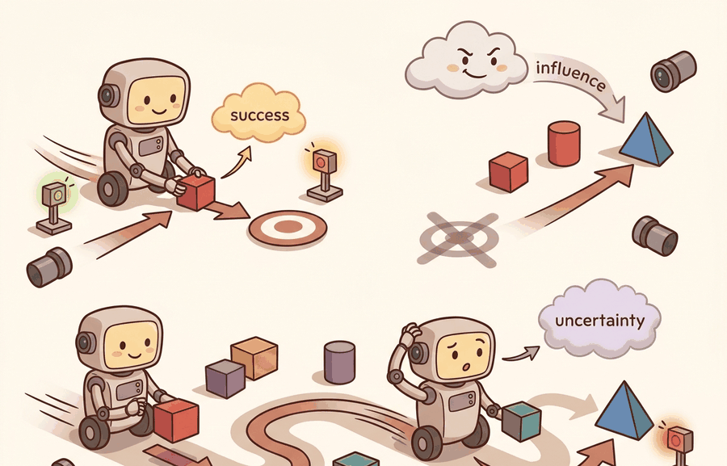

"A lifelong benchmark does not ask if the agent learned. It asks what the agent forgot, and what it was never given time to relearn."
A Continual Learning Evaluator

This section assumes familiarity with single-task manipulation benchmarks from section 12.2, particularly the concepts of task panel freezing, seed policy, and success predicate that are introduced there. The language-conditioning ideas developed here recur in Part 7: section 31.3 examines how referring expressions are grounded in perception, and section 31.5 extends language-conditioned task planning to ambiguity resolution and clarification. If you are primarily interested in how skills chain across tasks rather than how benchmarks measure that chaining, section 26.2 covers the options framework for hierarchical skill composition.
A robot that can open a drawer on command is useful. A robot that can open a drawer, then hear "now stack the block," then hear "turn off the light," without forgetting how the drawer works, is transformative. That gap, between single-task competence and language-driven lifelong learning, is exactly what LIBERO, CALVIN, and Meta-World were built to expose. Pretrained policies are getting better fast, yet leaderboard numbers keep hiding whether a method truly transfers or simply memorizes. Right now, as foundation models enter robotics, pinning down what these benchmarks actually measure, and how to run them without contaminating comparisons, has never mattered more. You will learn to set up all three suites, interpret their splits correctly, and produce forgetting diagnostics that stand up to scrutiny.
What This Section Builds
This section makes lifelong and language-conditioned benchmarks operational. LIBERO tests knowledge transfer across language-conditioned manipulation suites, CALVIN tests long-horizon language-conditioned tabletop behavior, and Meta-World tests multi-task and meta-learning across a structured set of manipulation tasks.
The goal is to evaluate learning over distributions, not isolated episodes. That means freezing task order, language templates, held-out goals, adaptation budget, replay budget, seeds, and the rule for measuring forgetting.
For Lifelong and language-conditioned: LIBERO, CALVIN, Meta-World, treat the leaderboard as an instrument: it is interpretable only when the benchmark isolates the capability, fixes the protocol, and records rerunnable context.
Theory
A lifelong benchmark is a sequence of task distributions rather than one static test set. Let $S_{k,t}$ be success on task family $k$ after training stage $t$. A strong final average can hide catastrophic forgetting if earlier tasks lose success after later training, so the evidence artifact should include the whole task-by-stage matrix, not only the last column.
Language conditioning adds another split boundary. A policy can overfit to instruction templates, object names, or goal phrasing while failing to ground new combinations. The evaluation must say whether language, objects, spatial relations, goals, or task families are held out.
The mechanism is transfer under controlled exposure. LIBERO separates kinds of knowledge shift, such as objects, spatial relations, goals, and mixtures. CALVIN emphasizes language-conditioned task sequences. Meta-World separates multi-task training from meta-learning adaptation, with held-out tasks in the meta-learning settings. Each suite needs a different split audit.
LIBERO defines 130 manipulation tasks split across four knowledge-shift suites (LIBERO-Spatial, LIBERO-Object, LIBERO-Goal, LIBERO-Long), each with 10 demonstrations per task. CALVIN evaluates chains of up to five language-conditioned subtasks in sequence on a tabletop with a sliding door, drawer, and light switch; the primary metric is the mean number of consecutive subtasks completed before failure (published baselines on the ABCD-D split reach roughly 1.0 to 4.2 subtasks depending on the method). Meta-World MT50 trains one policy across 50 manipulation tasks sharing an observation and action interface, while ML45 reserves 5 tasks entirely for held-out meta-learning evaluation, with adaptation limited to a fixed number of rollout episodes.
Consider a specific case for CALVIN: a policy must hear "push the red block right," complete that subtask, then hear "open the drawer," then "turn on the light." Each instruction is sampled from a held-out template set. If the policy scores 2.1 mean tasks, it succeeds on roughly the first two subtasks before failing at the third. A score of 4.2 means it nearly completes all five. This chain-completion metric reveals failure points that a single-task success rate would not expose, because a policy that memorizes individual instructions can still fail to maintain state across the chain.
Worked Example
Code Fragment 1 computes a simple forgetting diagnostic. A method that improves the final task while damaging earlier tasks needs a different claim than a method that retains old skills and transfers to new ones.
# Measure forgetting from a task-by-stage success matrix.
# Rows are task families, columns are training stages after each
# new family has been introduced in the same order for every method.
success_by_stage = {
"spatial": [0.68, 0.61, 0.55],
"object": [0.00, 0.64, 0.58],
"goal": [0.00, 0.00, 0.71],
}
forgetting = {}
for task, scores in success_by_stage.items():
best_before_final = max(scores[:-1])
if best_before_final == 0:
forgetting[task] = "not_previously_trained"
else:
forgetting[task] = round(best_before_final - scores[-1], 2)
print(forgetting)success_by_stage matrix preserves the evidence that a final average would hide. The forgetting values show how much success on earlier task families dropped after later training stages, which is central for LIBERO-style lifelong claims.The maintained suites provide task definitions and loaders, but they do not protect you from unfair transfer comparisons. The evaluation script must enforce the same task order, adaptation steps, replay buffer, prompt templates, demonstration access, and seed list for every method.
Practical Recipe
- State the transfer claim: new objects, new spatial relations, new goals, new task families, longer language-conditioned chains, or faster adaptation.
- Freeze task order, train/test task split, instruction templates, adaptation budget, replay budget, seeds, and stopping rule.
- Report the full task-by-stage matrix for lifelong learning, plus final average success.
- For Meta-World, separate multi-task performance from meta-learning adaptation to held-out tasks.
- Label failures as language grounding error, task-order forgetting, adaptation overfit, object confusion, goal ambiguity, or controller failure.
Algorithm: Lifelong Transfer Evaluation with Forgetting Audit
Input: policy $\pi_\theta$, task sequence $\mathcal{T} = (T_1, T_2, \ldots, T_K)$, instruction templates $\mathcal{L}_k$ per family, adaptation budget $A$, replay budget $R$, seed set $\mathcal{S}$
Output: task-by-stage success matrix $S \in \mathbb{R}^{K \times K}$, per-family forgetting $\Delta_k$, forward transfer $\text{FT}$
- Fix the evaluation schedule: freeze task order, prompt templates $\mathcal{L}_k$, held-out condition, $A$, $R$, and $\mathcal{S}$ before any training begins.
- Initialize $\theta_0$ randomly; set $S[k, t] = 0$ for all $k, t$.
- For each training stage $t = 1, \ldots, K$: train $\pi_{\theta_{t-1}}$ on $T_t$ using at most $R$ replay transitions from $\{T_1, \ldots, T_{t-1}\}$ and at most $A$ adaptation steps to obtain $\theta_t$.
- After stage $t$, evaluate $\pi_{\theta_t}$ on every previously introduced family $T_k$ ($k \leq t$) over all seeds $s \in \mathcal{S}$ using held-out templates $\mathcal{L}_k$; record $S[k, t] = \frac{1}{|\mathcal{S}|} \sum_{s} \text{success}(\pi_{\theta_t}, T_k, s)$.
- For CALVIN, replace step-level success with the mean consecutive-subtask completion count $\bar{n}_t = \mathbb{E}[\text{chain length}]$ per stage.
- Compute per-family forgetting: $\Delta_k = \max_{t < K}(S[k, t]) - S[k, K]$ for each $k$ trained before the final stage.
- Compute forward transfer: $\text{FT} = \frac{1}{K-1} \sum_{k=2}^{K} \bigl(S[k, k] - S[k, k-1]\bigr)$, where $S[k, k-1]$ is the zero-shot baseline before task $T_k$ is introduced.
- Compute backward transfer: $\text{BT} = \frac{1}{K-1} \sum_{k=1}^{K-1} \bigl(S[k, K] - S[k, k]\bigr)$, capturing how later training affects earlier skill retention.
- Label each episode failure as one of: language grounding error, task-order forgetting, adaptation overfit, object confusion, goal ambiguity, or controller failure.
- Save $S$, $\{\Delta_k\}$, $\text{FT}$, $\text{BT}$, and the failure-label distribution as a single artifact; report the final-stage average $\bar{S}_K = \frac{1}{K}\sum_k S[k,K]$ alongside the full matrix, never in place of it.
For Lifelong and language-conditioned: LIBERO, CALVIN, Meta-World, compare only metrics co-computed in one benchmark pass with the same task panel, wrappers, seed policy, success definition, and logged failure labels.
The common mistake is comparing methods with different task orders or different adaptation budgets. A learner that sees more replay data, extra prompt variants, or additional tuning episodes is not being compared on the same lifelong benchmark, even if the final success table uses the same task names.
A team evaluating LIBERO, CALVIN, or Meta-World should log task family, task order, language instruction, held-out condition, adaptation steps, replay source, seed, per-stage success, and final success. Those fields reveal whether a method transfers knowledge, memorizes prompt templates, or forgets earlier skills.
A lifelong benchmark is a diary, not a trophy photo. The final row matters, but the intermediate pages tell you whether the robot kept its old skills.
The frontier is moving from single-task success toward policies that retain, compose, and extend skills under language guidance. The open evaluation problem is making transfer claims precise enough that gains cannot be explained by easier task orders, prompt leakage, extra replay, or hidden adaptation.
Can you name the task order, held-out condition, language-template split, adaptation budget, replay budget, seed list, per-stage metric, and forgetting measure? If not, the experiment boundary is still too vague.
Lifelong and language-conditioned benchmarks become useful when they expose the sequence of learning, not only the end state. A LIBERO result should show which knowledge shift was tested. A CALVIN result should show how language-conditioned chains were sampled and scored. A Meta-World result should say whether it evaluates multi-task training or adaptation to held-out tasks.
The graduate-level habit is to separate final competence from learning dynamics. Final success asks whether the policy can solve the last evaluation panel. Forward transfer asks whether earlier training helps later tasks. Backward transfer and forgetting ask whether later training preserves earlier skills. These are different constructs and must be co-computed from one task-by-stage artifact.
| Suite | Primary construct | Protocol detail to freeze |
|---|---|---|
| LIBERO | Lifelong robot learning and knowledge transfer under language-conditioned manipulation tasks | Task suite, order, prompt templates, replay budget, adaptation budget, and forgetting metric. |
| CALVIN | Long-horizon language-conditioned tabletop behavior | Instruction distribution, chain length, start states, horizon, success predicate, and seed list. |
| Meta-World MT settings | Multi-task learning across manipulation tasks | Task set, shared observation/action interface, per-task success, and aggregation rule. |
| Meta-World ML settings | Meta-learning and adaptation to held-out tasks or goals | Train/test task split, support episodes, adaptation steps, and evaluation episodes. |
| Language-conditioned variants | Grounding instructions into manipulation behavior | Template split, paraphrase access, object vocabulary, and held-out language-object combinations. |
A robust transfer benchmark starts with a schedule file. The schedule file lists each training stage, task family, prompt set, replay source, adaptation budget, and evaluation panel. Every method reads the same schedule, which keeps the comparison tied to learning dynamics rather than run-specific choices.
- Write a schedule with task order, prompt templates, train/test tasks, adaptation budget, replay budget, and seeds.
- Evaluate after each stage on the same held-out panel, not only after final training.
- Save the task-by-stage success matrix, final average, forward transfer, backward transfer, and forgetting.
- Stratify results by task family or language condition so one easy family does not dominate the claim.
- Keep prompt variants and demonstration access identical across methods.
Code Fragment 2 records a transfer schedule. This is the file you want reviewers to inspect before they trust a lifelong-learning number.
# Define one transfer schedule shared by every compared method.
# This schedule fixes task order, adaptation budget, replay budget,
# and held-out evaluation so final averages are construct-matched.
from dataclasses import dataclass, asdict
@dataclass
class TransferSchedule:
suite: str
task_order: tuple[str, ...]
heldout_condition: str
adaptation_steps: int
replay_budget: int
seeds: tuple[int, ...]
def as_row(self) -> dict[str, object]:
return asdict(self)
schedule = TransferSchedule(
suite="LIBERO",
task_order=("spatial", "object", "goal"),
heldout_condition="new_language_object_combinations",
adaptation_steps=0,
replay_budget=200,
seeds=(0, 1, 2),
)
print(schedule.as_row())TransferSchedule makes task order and adaptation budget explicit before any lifelong result is reported. The heldout_condition field tells the reader whether the number tests new language-object combinations, new goals, new tasks, or another transfer boundary.Expected output: the printed schedule should expose task order, held-out condition, adaptation budget, replay budget, and seeds. If two methods use different schedules, their final success values do not belong in one comparison.
When a lifelong or language-conditioned experiment fails, inspect the matrix before changing the model. A low final average may come from one hard task family, a prompt-grounding failure, forgetting of earlier tasks, insufficient adaptation budget, or a controller failure unrelated to transfer. The failure label should say which one.
Lifelong and language-conditioned benchmarks are useful when they report task order, held-out conditions, adaptation budget, replay budget, per-stage success, and forgetting from one shared evaluation schedule.
Design a LIBERO, CALVIN, or Meta-World comparison for a transfer claim. Specify the task order, held-out condition, adaptation budget, replay budget, seed list, and the forgetting metric you would report.
Section 12.4 → moves from transfer schedules to long-horizon household tasks, where predicate progress and failure points must be saved with final success.
ManiSkill Contributors. "ManiSkill Documentation."
ManiSkill provides manipulation tasks, demonstrations, GPU-parallel workflows, and documentation for robot-learning experiments. It is relevant when this section asks how benchmark design turns simulator capability into comparable evidence. Readers should connect this source to lifelong and language-conditioned: libero, calvin, meta-world when deciding what is reusable, what is benchmark-specific, and what must be remeasured.
RoboCasa Team. "RoboCasa Documentation."
RoboCasa documents everyday manipulation tasks and simulation assets, including the 2024 release lineage and later RoboCasa365 expansion. Readers should use it to study how task diversity and environment generation affect benchmark claims. Readers should connect this source to lifelong and language-conditioned: libero, calvin, meta-world when deciding what is reusable, what is benchmark-specific, and what must be remeasured.
Mandlekar, A. et al. "robomimic Documentation."
robomimic provides datasets and algorithms for learning from demonstrations. It matters here because benchmark evaluation often depends as much on dataset format and split discipline as on simulator physics. Readers should connect this source to lifelong and language-conditioned: libero, calvin, meta-world when deciding what is reusable, what is benchmark-specific, and what must be remeasured.
James, S. et al. (2019). "RLBench: The Robot Learning Benchmark and Learning Environment." arXiv.
RLBench frames a large set of vision-guided manipulation tasks with demonstrations and task variation. It is useful for readers studying few-shot, multi-task, and manipulation benchmark design. Readers should connect this source to lifelong and language-conditioned: libero, calvin, meta-world when deciding what is reusable, what is benchmark-specific, and what must be remeasured.
Stanford Vision and Learning Lab. "BEHAVIOR-1K."
BEHAVIOR-1K grounds household embodied AI tasks in human needs and long-horizon mobile manipulation. It gives benchmark designers a concrete example of task suites that go beyond isolated tabletop success rates. Readers should connect this source to lifelong and language-conditioned: libero, calvin, meta-world when deciding what is reusable, what is benchmark-specific, and what must be remeasured.